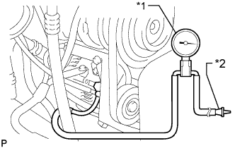

ВАКУУМНЫЙ НАСОС (для моделей с 5L-E) > УСТАНОВКА |
| 1. УСТАНОВИТЕ ВАКУУМНЫЙ НАСОС В СБОРЕ |
Совместите метки и закрепите вакуумный насос на генераторе 4 болтами.
| 2. УСТАНОВИТЕ ГЕНЕРАТОР С ВАКУУМНЫМ НАСОСОМ В СБОРЕ |
| 3. ПРОВЕРЬТЕ ВАКУУМНЫЙ НАСОС В СБОРЕ |
Отсоедините вакуумный шланг от вакуумного насоса.
|  |
Подсоедините шланг датчика разрежения к насосу.
| *1 | Датчик разрежения |
| *2 | Пробка |
Вставьте пробку в другой шланг датчика.
Запустите двигатель и прогрейте его в течение не менее 2 минут.
Измерьте отрицательное давление насоса на холостом ходу двигателя.
Снимите датчик с насоса.
Подсоедините шланг к насосу с помощью фиксатора.